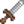
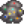

Las minas
| Las minas | |
 | |
 | |
| Cerrado: | Nunca |
| Residentes: | |
Las minas se encuentran en la zona norte de La montaña (al noreste de la Carpintería y al oeste del Gremio de aventureros). Están bloqueadas por escombros de roca hasta el día 5 de Primavera (Año 1), cuando El Jugador recibe una carta.
Descripción general
Hay 120 pisos (a veces llamados niveles) en las Minas. El tipo y la cantidad de mineral aumentan a medida que El Jugador se adentra en las minas. Las Minas están llenas de rocas y tierra blanda. Las rocas pueden ser extraídas con un Pico para obtener piedras, Minerales y Geodas. Se puede usar una Azada en la tierra blanda para recoger Minerales, Artefactos, Menas, Arcilla y Zanahorias cavernarias.
Para avanzar más en las Minas, hay que encontrar una escalera en cada piso. La escalera aparecerá después de romper rocas o de derrotar a un enemigo (matar enemigos es la opción sin energía para encontrar escaleras). Si un piso está "infestado" o "invadido" por monstruos, todos los enemigos deben ser derrotados en ese piso antes de que aparezca una escalera. (Sin embargo, ten en cuenta que hay un error que afecta a muy pocos pisos en los que aparecerá una escalera antes de matar a todos los enemigos).
Si te desmayas en las minas por agotamiento (cero de energía) o cuando lleguen las 2:00 AM perderás el 10% del oro hasta un máximo de  1000o. Si te desmayas por falta de salud, perderás entre un 5% y un 25% de oro (hasta un máximo de
1000o. Si te desmayas por falta de salud, perderás entre un 5% y un 25% de oro (hasta un máximo de  5000o).[1] y también varios artículos del inventario, incluyendo Armas y Herramientas (a excepción de la Espada galaxia). Si las herramientas se pierden, se devuelven por correo al día siguiente, aunque no se devolverán las Cañas de pescar ni las armas. El jugador se despertará en la entrada de la mina, encontrado por uno de los aldeanos.
5000o).[1] y también varios artículos del inventario, incluyendo Armas y Herramientas (a excepción de la Espada galaxia). Si las herramientas se pierden, se devuelven por correo al día siguiente, aunque no se devolverán las Cañas de pescar ni las armas. El jugador se despertará en la entrada de la mina, encontrado por uno de los aldeanos.
Puedes recuperar objetos perdidos contactando a Marlon en el Gremio de aventureros. Un objeto perdido (o una pila de objetos) se puede comprar allí, en cualquier momento después de desmayarse debido a la poca salud. El precio es el precio de venta base del objeto perdido (es decir, el oro que se obtendría al vender un objeto o una pila de objetos). El servicio de recuperación de objetos de Marlon persiste hasta la próxima vez que el jugador pierda objetos en las minas, cuando los objetos perdidos anteriormente se reemplazan por objetos recién perdidos.
Hay una vagoneta en la entrada para poder realizar viajes rápidos desde y hacia la mina. Se desbloquea al completar el lote de la Sala de Caldera o si lo compras en el Formulario de proyectos de desarrollo comunitario de Joja en el MercaJoja por  15 000o.
15 000o.
Contenido
Pisos
Existen 120 pisos divididos en 3 secciones, de 40 pisos cada una, y con una temática para cada una. La primera sección tiene un estilo de tierra marrón, la segunda un estilo helado y la última tiene un estilo de lava y morado oscuro. Los últimos 10 pisos de cada sección contienen una variación de la temática: la primera sección (pisos 31-39) tiene un estilo sombrío, la segunda sección (70-79) tiene un estilo medieval (castillo) y la última sección (110-119) tiene un estilo carmesí intenso.
Los pisos correspondientes de cada sección tienen la misma disposición. Por ejemplo, los pisos 5, 45 y 85 tienen la misma disposición, al igual que los pisos 19, 59 y 99, o los pisos 31, 71 y 111, y así sucesivamente.
| Piso | Estilo | Enemigos | Tesoros | Notas |
|---|---|---|---|---|
| Entrada | Tierra marrón | Ninguno | Una Vagoneta se encuentra aquí. El Enano vive a través del pasadizo bloqueado al este. (necesitarás un Pico de acero o una Bomba para poder pasar). | |
| 1 - 9 | Tierra marrón | Las Menas de cobre empieza a aparecer en el Piso 2. Minerales encontrados: Amatista, Topacio, Cuarzo, y Cristal terrestre. Se encuentran todas las gemas excepto el Diamante cuando El Jugador ha llegado al fondo de las Minas. | ||
| 10 | Tierra marrón | Ninguno | ||
| 11 - 19 | Tierra marrón, hierbajos | El Piso 12 tiene una Vagoneta que contiene 6 piezas de carbón al final del camino. Escalera garantizada al final del piso, incluso si el piso está infestado. El Piso 18 tiene una Vagoneta que contiene 6 piezas de carbón en la parte inferior derecha del piso. El Piso 19 sigue un patrón en espiral | ||
| 20 | Tierra marrón, hierbajos | Ninguno |  Espadín de acero | Pesca: Pez fantasma y Pez piedra |
| 21 - 29 | Tierra marrón, hierbajos | El Piso 28 tiene una Vagoneta que contiene 6 piezas de carbón en la parte inferior derecha del piso. | ||
| 30 | Tierra marrón | Ninguno | Sin recompensa | |
| 31 - 39 | Sombras, tierra gris | Las Menas de cobre y las Geodas son más comunes. El Piso 38 tiene una vagoneta que contiene 6 piezas de carbón en la parte superior izquierda del piso. | ||
| 40 | Tierra helada | Ninguno | ||
| 41 - 49 | Tierra helada | Comienzan a aparecer Menas de hierro, Geodas de hielo, Aguamarina, Lágrima helada y Jade. | ||
| 50 | Tierra helada | Ninguno | Empiezan a aparecer Diamantes (1 cada 500 rocas). Cada piso después del 50 aumenta la frecuencia en 0,00016 (por ejemplo, 1 de cada 100 piedras en el piso 100). | |
| 51 - 59 | Tierra helada | Duendes del polvo potencialmente abundantes (que frecuentemente dejan caer Carbón). El Piso 52 contiene una bolsa con 6 trozos de carbón al final del camino. Escalera garantizada al final del piso, incluso si el piso está infestado. El Piso 58 tiene una bolsa que contiene 6 trozos de carbón en la parte inferior derecha del piso. El Piso 59 está situado en espiral. | ||
| 60 | Tierra helada | Ninguno | Pesca: Pez carámbano y Pez fantasma | |
| 61 - 69 | Tierra helada | El piso 68 contiene una bolsa con 6 trozos de carbón en la parte inferior derecha del piso. | ||
| 70 | Castillo helado | Ninguno | ||
| 71 - 79 | Castillo helado | La planta 78 contiene una bolsa con 6 trozos de carbón en la parte superior izquierda de la planta. | ||
| 80 | Lava, tierra morada | Ninguno | ||
| 81 - 89 | Lava, tierra morada | Comienzan a aparecer Esmeraldas, Cuarzo de fuego, Menas de oro, Geodas de Magma y Rubíes. | ||
| 90 | Lava, tierra morada | Ninguno | ||
| 91 - 99 | Lava, tierra morada | El Piso 92 tiene una Vagoneta que contiene 6 piezas de carbón al final del camino. Escalera garantizada al final de la planta, incluso si la planta está infestada. El Piso 98 tiene una Vagoneta que contiene 6 piezas de carbón en la parte inferior derecha del piso. El Piso 99 está situado en forma de espiral. | ||
| 100 | Lava, tierra morada | Ninguno | Pesca: Anguila de lava | |
| 101 - 109 | Lava, tierra morada, hierbajos | Empiezan a aparecer Piedras Místicas. El piso 108 tiene una Vagoneta que contiene 6 piezas de carbón en la parte inferior derecha del piso. | ||
| 110 | Lava, tierra carmesí | Ninguno | ||
| 111 - 119 | Lava, tierra carmesí | Las Geodas de Magma son comunes. El piso 118 tiene una Vagoneta que contiene 6 piezas de carbón en la parte superior izquierda del piso. | ||
| 120 | Lava, tierra morada | Ninguno | Último piso |
Recompensas remezcladas
La elección de recompensas de minas "mezcladas" en Opciones Avanzadas al comienzo del juego dará como resultado una recompensa aleatoria para cada piso de recompensas de la siguiente lista. Algunos pisos no se modifican. Todos los pisos tienen la posibilidad de tener su recompensa normal.
| Piso | Posibles recompensas | Notas |
|---|---|---|
| 10 | ||
| 20 | ||
| 30 | Sin recompensa | Sin alterar |
| 40 | Sin alterar | |
| 50 | ||
| 60 | ||
| 70 | Sin alterar | |
| 80 | ||
| 90 | ||
| 100 | Sin alterar | |
| 110 | ||
| 120 | Sin alterar |
Escaleras
Las escaleras pueden aparecer desde los Monstruos[2], Rocas[3], o generarse[4]
Cada monstruo asesinado tiene una probabilidad fija del 15% de generar una escalera, asumiendo que el enemigo fue asesinado sobre una casilla sin obstrucciones. Esto no evita que las escaleras se genere en las rocas.
Algunos pisos están precargados con una escalera (12, 52, 92, pisos del tesoro en la Caverna Calavera). Estas escaleras no evitan que las escaleras se genere en las rocas.
Después de que se cargue un piso, hay un 95% de probabilidad de que una escalera intente genere. Se elige una casilla al azar y, si no está obstruida, se coloca una escalera. Esto evitará que las escaleras se reproduzcan en las rocas.
Cada golpe de roca tiene una probabilidad base del 2% de generar una escalera. Esto se ajusta por la Suerte diaria, aumentando en un 2% en el mejor de los casos o disminuyendo en un 2% en el peor de los casos con el Amuleto especial que agrega un 0.5%. Los aficionados a la comida añaden un 1% por cada punto de suerte. Se suma la inversa del número de rocas que quedan después de golpear la roca (por ejemplo, si quedan 5 rocas, entonces 1/5 = 0,2 o 20%, si quedan 100 rocas, entonces 1/100 = 0,01 o 1%). Si no quedan enemigos, se añade el 4%. Si se da esta oportunidad, se generará una escalera y evitará que se generen más escaleras de las rocas. En la Caverna Calavera, hay un 20% de probabilidad de que se genere un hueco en su lugar, y esto no evita que se generen más escaleras/hueco en las rocas.
Cajas y barriles
Los contenedores de las Minas pueden soltar botín aleatoriamente al ser destruidos. Los contenedores tienen las mismas probabilidades de ser cajas o barriles; el contenido posible no se ve afectado por el tipo de contenedor. Una caja puede soltar como máximo un tipo de objeto, aunque una pila puede contener varios.
La mayoría de los contenedores reaparecen cada vez que se entra en un nivel. Sin embargo, los contenedores de los pisos de recompensa de las Minas sólo aparecen la primera vez que se entra en ellos. Una vez destruidos, no aparecerán nuevos contenedores en esos niveles.
Algunos objetos sustituyen a otros dependiendo de si el jugador ha llegado al fondo de Las Minas. Donde hay dos valores, el primero es antes de llegar al fondo de Las Minas, el segundo es después. Los posibles objetos que se encuentran en los contenedores y sus posibilidades son[5]:
| Objeto | 0-39 | 40-79 | 80+ (includa Caverna Calavera) | Minas difíciles/Caverna Calavera
(Puede soltar varios objetos) |
|---|---|---|---|---|
| Nada | 41.42% | 41.42% | 42% | 44% |
| 9.24% | 9.24% | 5.2% | 8% | |
| 9.24% | 4.62% | 5.2% | 0% | |
| 2.24% | 2.24% | 1.87% | 0% | |
| 2.31%/0% | 2.31%/0% | 0% | 2%/0% | |
| 4.62% | 4.62% | 0% | 0% | |
| 4.62% | 4.62% | 5.2% | 4% | |
| 4.62% | 4.62% | 5.2% | 4% | |
| 0% | 4.62% | 5.2% | 4% | |
| 0% | 0% | 5.2% | 4% | |
| 0% | 0% | 0% | 0.68% | |
| 7.8% | 7.8% | 7.8%/5.2% | 0% | |
| 4.84% | 0% | 0% | 0% | |
| 0% | 4.84% | 0% | 0% | |
| 0% | 0% | 2.6% | 0% | |
|  Omnigeoda | 0% | 0% | 1.87% | 4% |
| 2.24% | 0% | 0% | 0% | |
| 2.24% | 0% | 0% | 0% | |
| 0% | 2.24% | 0% | 4% | |
| 0% | 2.24% | 0% | 4% | |
| 0% | 0% | 1.87% | 0% | |
| 0% | 0% | 1.87% | 0% | |
| 0% | 0% | 5.2% | 0% | |
| 0% | 0% | 1.87% | 0% | |
| 0%/4.62% | 0% | 0% | 4% | |
| 0% | 0%/4.62% | 0% | 0%/4% | |
| 0% | 0% | 0%/2.6% | 0% | |
| 2.31%/0% | 0% | 0% | 2%/0% | |
| 0% | 2.31%/0% | 0% | 0% | |
| 0% | 0% | 0% | 0.23% | |
| 0% | 0% | 0% | 0.23% | |
| 0% | 0% | 0% | 0.23% | |
| 0% | 0% | 0% | 4% | |
| 0% | 0% | 0% | 4% | |
| 0% | 0% | 0% | 0.15% | |
| 0% | 0% | 0% | 0.15% | |
| 0% | 0% | 0% | 0.15% | |
| 0% | 0% | 0% | 0.15% | |
| 0% | 0% | 0% | 0.15% | |
| 0% | 0% | 0% | 0.15% | |
| 0% | 0% | 0% | 0.15% | |
| 0% | 0% | 0% | 0.15% | |
| 0% | 0% | 0% | 0.15% | |
| 0% | 0% | 0% | 0.15% | |
| 0% | 0% | 0% | 0.15% | |
| 0% | 0% | 0% | 0.15% | |
| 0% | 0% | 0% | 0.15% | |
| 0% | 0% | 0% | 0.15% | |
| 0% | 0% | 0% | 0.15% | |
| 0% | 0% | 0% | 0.15% | |
| 0% | 0% | 0% | 0.15% | |
| 0% | 0% | 0% | 0.15% | |
| 0% | 0% | 0% | 0.15% | |
| 0% | 0% | 0% | 0.15% | |
| 0% | 0% | 0% | 0.15% | |
| 0% | 0% | 0% | 0.15% | |
| 0% | 0% | 0% | 0.15% | |
| 0% | 0% | 0% | 0.15% | |
| 0% | 0% | 0% | 0.15% | |
| 0% | 0% | 0% | 0.15% | |
| 0% | 0% | 0% | 0.15% | |
| 0% | 0% | 0% | 0.54% | |
| 0% | 0% | 0% | 0.68% | |
| Objeto especial (ver más abajo) |
2.24% | 2.24% | 1.87% | 0% |
Objetos especiales
Una pequeña fracción de cajas y barriles (2,2%) dejará caer uno de los siguientes objetos especiales[6]. Visualmente, estas cajas y barriles son indistinguibles de los contenedores que contienen botín estándar.
Estos elementos especiales también pueden ser soltados por una pequeña fracción de monstruos. Aproximadamente el 1,2% de las Babas son identificables como Babas especiales por sus estrellas doradas. Para todos los demás monstruos, menos del 0,2% de los monstruos soltarán elementos especiales en lugar del botín estándar, pero estos monstruos especiales se ven idénticos a las versiones estándar.
Parches de tierra
La siguiente tabla enumera las posibilidades de encontrar elementos disponibles en zonas de tierra[7]. No importa si se usa una Azada o una bomba para cavar.
| Objeto | Probabilidad |
|---|---|
| Nada | 85.9% |
| Rollo enano I | 0.16% |
| Libro perdido/Semillas variadas | 0.16% |
| Cuchara oxidada | 0.16% |
| Espuela oxidada | 0.16% |
| Cola esquelética | 0.16% |
| Yelmo enano (solo en pisos 1-40) | 0.1% |
| Rollo enano II (solo en pisos 1-40) | 0.1% |
| Dispositivo enano (solo en pisos 41-80) | 0.1% |
| Lingote de oro (solo en pisos 41-80) | 0.1% |
| Rollo enano IV (solo en pisos 81-120) | 0.2% |
| Muñeco extraño (amarillo) | 0.03% |
| Muñeco extraño (verde) | 0.03% |
| Piedra | 1.33% |
| Mineral (Piso apropiado) | 1.33% |
| Arcilla | 4.68% |
| Omnigeoda | 0.17% |
| Geoda (Piso apropiado) | 0.51% |
| Zanahoria cavernaria | 5.03% |
Pisos infestados

Ocasionalmente, el jugador entrará en un piso infestado de babas o una mezcla de monstruos. A diferencia de los pisos normales, no hay rocas y en los pisos infestados de babas, las paredes y el suelo están cubiertos de baba verde en lugar de los temas normales. Se pueden encontrar objetos recolectables como Cuarzo o Setas.
Para proceder desde un piso infestado, todos los monstruos deben ser asesinados (esto incluye Cavadorines que pueden estar escondidos bajo parches de tierra). Tenga en cuenta que un error hace que la escalera garantizada en los pisos 12, 52 y 92 siga apareciendo una vez que se carga el nivel, incluso si dicho piso está infestado. Cuando hayas matado a todos los monstruos, aparecerá una escalera en el lugar donde mataste al último monstruo o junto a la entrada. Si aparece junto a la entrada, el jugador será notificado con un mensaje que dice, "Ha aparecido un camino hacia abajo". Si aparece donde se mató al último monstruo y el jugador no entra en la escalera inmediatamente, después de algún tiempo es posible que aparezca una segunda escalera cerca de la entrada y un mensaje notificando al jugador "Ha aparecido un camino hacia abajo".
Una Escalera también se puede utilizar para escapar de una planta infestada.
El Bonificador de Aceite de ajo evita que los pisos se infesten. El Aceite de ajo se debe consumir antes de ingresar al piso para evitar la infestación.
En raras ocasiones, puede que no haya monstruos en un piso infestado. En este caso, aparecerá una escalera junto a la entrada poco después de entrar en el nivel, junto con el mensaje "Ha aparecido un camino hacia abajo".
No hay un patrón para la aparición de los pisos infestados, pero los pisos infestados permanecerán infestados durante todo el día. Los pisos infestados no pueden aparecer en pisos de ascensor (pisos que terminan en 0 o 5), ni en los 5 primeros niveles, el nivel 19 o los 10 últimos niveles de cada sección de la mina.[8] Esto incluye los niveles 1-4, 41-44, 81-84 (los primeros 5 niveles), los niveles 19, 59, 99 (el nivel 19), y los niveles 31-39, 71-79, 111-119 (los últimos 10 niveles), así como los niveles de la Caverna de la Calavera que usan el mismo diseño que estos niveles.
Visitar pisos infestados repetidamente puede ser una excelente manera de lograr rápidamente algunas de las Recompensas de erradicación de monstruos en el Gremio de aventureros.
Piso de setas

Cualquier piso de la sección más baja de las Minas (niveles 81-119), excluidos los pisos de los ascensores, tiene un 3,5% de probabilidades de generarse como piso de setas, siempre que el mismo piso no se haya generado antes como piso de setas el mismo día.[9]
Las plantas de setas tendrán un mayor número de setas rojas y lilas. Estos pisos también tendrán una variedad de linternas de colores que por lo general incluye al menos una linterna verde.
El piso de setas sólo aparecerá la primera vez que un jugador lo visite y desaparecerá inmediatamente después de abandonarlo.
Pisos de mazmorras
Los pisos de mazmorra son un tipo de piso similar en apariencia al piso único de la Mina de cantera. Cualquier piso elegible en las Minas tiene una probabilidad del 4,4% de generarse como piso mazmorra después de desbloquear la Cantera. Estos suelos tienen los mismos enemigos y rocas que la Mina de cantera y a menudo pueden ser considerablemente más difíciles que los de los suelos a los que sustituyen. Los pisos de mazmorra nunca están infestados.[8]
Al igual que ocurre con los pisos infestados, los pisos de mazmorra no pueden aparecer en pisos de ascensor ni en el primer piso. También permanecerán como plantas de mazmorra durante todo el día. Sin embargo, a diferencia de los pisos infestados, los pisos de mazmorra pueden aparecer en los pisos 2-4, 42-44, y 82-84, 19, 59, y 99, 31-39, 71-79, y 111-119 (excluyendo los pisos 35, 75, y 115, ya que son pisos de ascensor).
Los jugadores sin herramientas o armas de alto nivel podrían beneficiarse de usar una Escalera para saltarse estos pisos y ahorrar tiempo.
El fondo de las minas
En el piso 120 de las Minas está la Llave calavera. La llave calavera se usa para abrir una puerta en una cueva en el Desierto de Calico, que conduce a la Caverna Calavera. También se usa para desbloquear la máquina recreativa Junimo Kart para jugar en el Salón Fruta Estelar.
Además, llegar a este piso también cambia otras partes del juego:
- Esquirlas prismáticas y Diamantes ahora raramente caerán de cualquier monstruo;
- Ahora se pueden encontrar Gemas al buscar en los Cubos de basura;
- Las Gemas podrán ser solicitadas en el tablón de «Necesito ayuda» afuera de la Tienda local Pierre's;
- La mayoría de los monstruos serán más fuertes[10]. Específicamente:
- La Defensa aumentará un 50%.
- La probabilidad de fallar un golpe (es decir, no hacer daño con un golpe) se duplicará.
- Los Puntos de salud aumentarán en un valor aleatorio entre 0 y 100%.
- El Daño se incrementará en un valor aleatorio entre 0 y 50%.
Estos cambios son permanentes y no se reiniciarán aunque esté activa la misión "Peligro en las profundidades" (que reinicia el ascensor de la mina).
Altar del desafío
El Altar del Desafío se desbloquea tras entrar en la Habitación de nueces del Señor Qi en la Isla Jengibre y completando la misión "Peligro en las profundidades". Se encuentra en el piso 120 de las Minas y actúa como un interruptor de palanca, alternando la fuerza de los enemigos entre los niveles normales y los niveles "peligrosos". El interruptor no cambia de nivel de fuerza hasta el día siguiente.
Mientras el entorno peligroso está activo, se pueden encontrar Piedras de mineral radiactivo en las minas, de donde se puede obtener Mineral radiactivo.
El día que el jugador completa por primera vez la misión "Peligro en las profundidades", se puede encontrar una nota del Sr. Qi en el altar diciendo que ha desactivado temporalmente el altar y que el jugador puede volver mañana.
Estrategia
Enjambres
Si la pantalla se vuelve "brumosa", "resplandeciente" o "brumosa", varios de los monstruos voladores del piso actual aparecerán y atacarán. El consumo de Aceite de ajo evitará estas neblinas de infestación.
Escaleras
Si el jugador ha alcanzado al menos el nivel 2 de la habilidad de Minería, los pisos se pueden saltar usando una Escalera (hecha a mano de 99 de Piedra). Una escalera permite el acceso instantáneo al siguiente piso de las minas. Después de cada 5 pisos, habrá un ascensor disponible que permitirá el acceso a ese piso en cualquier momento.
Comida
A continuación se muestran alimentos con Bonificadores que son útiles al explorar la Caverna Calavera (y por tanto, a las Minas). Tenga en cuenta que comer un alimento con bonificadores eliminará los bonificadores activos y los reemplazará con los beneficios de la comida recién consumida. Si la comida recién consumida no tiene bonificadores, los bonificadores existentes permanecerán en vigor Café, Café con triple de expreso y Refresco de jengibre son una excepción a esta regla; se apilarán con otros bonificadores a la comida (pero no entre ellos).
| Imagen | Nombre | Ingredientes | Restaura | Bonificadores | Duración |
|---|---|---|---|---|---|
| Botín otoñal | |||||
| Café | |||||
| Tortas de cangrejo | |||||
| Salsa de grosellas | |||||
| Berenjena al parmesano | |||||
| Anguila frita | |||||
| Setas salteadas | |||||
| Refresco de jengibre | |||||
| Almuerzo de la suerte | |||||
| Caramelo mágico | N/A | ||||
| Bollito de arce | |||||
| Capricho de minero | |||||
| Bocaditos de pimiento | |||||
| Sopa de calabaza | |||||
| Bandeja de raíces | |||||
| Anguila picante | |||||
| Relleno | |||||
| Supercomida | |||||
| Café con triple de expreso |
Errores
- Un piso infestado en los pisos 12, 52 o 92 en las Minas (pisos precargados con una escalera) seguirá teniendo la escalera precargada. Esto hace posible descender de esa planta sin matar a todos los enemigos o usar una escalera. Si matas a todos los enemigos de la planta, aparecerá una segunda escalera.
Curiosidades
- Puedes usar un hacha, una guadaña o un pico para matar monstruos en lugar de una espada
- La piedra se puede comprar en la Carpintería por
 20o la unidad, lo que permite saltar los 120 pisos utilizando escaleras por poco menos de 225 000o (es útil para desbloquear todos los pisos y volver más tarde).
20o la unidad, lo que permite saltar los 120 pisos utilizando escaleras por poco menos de 225 000o (es útil para desbloquear todos los pisos y volver más tarde).
- A partir del año 2, el precio de la piedra aumenta a 100o, lo que la convierte en una técnica mucho más cara. (1 125 000o).
- Los Monstruos se vuelven más difíciles de matar, aumentan el daño y pueden obtener un aumento de velocidad después de llegar al fondo de las Minas[10], por lo que esta técnica no está exenta de penalizaciones.
- A partir del año 2, el precio de la piedra aumenta a
- Si todos los monstruos de un piso mueren, la probabilidad de encontrar una escalera debajo de una roca rota aumenta en un 4%.[11]
- En el piso 120, se encuentran tanto la Escultura de serpiente verde como la Escultura de serpiente morada.
Galería

Entrada a las minas

La entrada de la mina bloqueada antes del día 5 de primavera

Una vagoneta llena con carbón
Links Externos
Los jugadores con acceso a sus archivos de partidas guardadas pueden encontrar útil la utilidad "Stardew Predictor" para predecir qué pisos de la mina estarán infestados y qué pisos serán de setas. La utilidad (en inglés) se encuentra en https://mouseypounds.github.io/stardew-predictor/.
Referencias
- ↑ Consulte Event::command_minedeath en el código del juego.
- ↑ Consulte MineShaft::monsterDrop en el código del juego.
- ↑ Consulte MineShaft::checkStoneForItems en el código del juego.
- ↑ Consulte MineShaft::populateLevel en el código del juego.
- ↑ Consulte BreakableContainer::releaseContents en el código del juego.
- ↑ Consulte MineShaft::getSpecialItemForThisMineLevel en el código del juego.
- ↑ Consulte MineShaft::checkForBuriedItem en el código del juego.
- ↑ 8,0 8,1 ConsulteMineShaft::loadLevel en el código del juego.
- ↑ Consulte MineShaft::chooseLevelType en el código del juego.
- ↑ 10,0 10,1 Consulte Monster::parseMonsterInfo en el código del juego.
- ↑ Consulte MineShaft::checkStoneForItems en el código del juego.
Historial
- 1.3.27: Eliminado exploit que creaba una escalera a la Caverna Calavera en el piso 120 haciendo explotar un objeto con una bomba. Se han añadido varios cambios que ocurren después de llegar al fondo de las minas, en concreto, las esquirlas prismáticas/diamantes ahora rara vez caen de algún monstruo, las gemas/setas púrpuras ahora se encuentran en los cubos de basura y se pueden solicitar mediante misiones de los NPC, y algunos monstruos se han vuelto más fuertes.
- 1.4: Se agregaron niveles de mazmorra aleatoria (mina de cantera). Se modificó la forma en que se generan los niveles de hongos, por lo que no se pueden "cultivar" repetidamente. Se eliminó el exploit donde hacer clic en el ícono del diario evitaría la escena de corte de desmayo (de baja salud) donde se perdieron elementos y oro. Los niveles de las minas ya no se olvidan cuando se desmaya debido a la baja salud. Se agregó el servicio de recuperación de artículos de Marlon. Los pisos de la mina ahora también se reinician tan pronto como el jugador regresa al piso 0, en lugar de solo los siguientes 10 minutos del reloj del juego cuando se encuentra en un piso con un número más bajo.
- 1.5: En las Opciones avanzadas al iniciar una granja, hay una opción para que Recompensas de las minas sea predeterminado o remezclado. Se agregó el Santuario del desafío al piso 120 después de completar la misión Sr.Qi.
- 1.5.5: Se ha solucionado un problema por el que las minas en modo difícil podían activarse permanentemente y no poderse volver a cambiar.
| Lugares | |
|---|---|
| Lugares | Bosque secreto • Bosque Tizón • Bosque trasero • Cantera • Caverna Calavera • Cementerio • Cloacas • Desierto de Calico • Estanque de la granja • Ferrocarril • Isla Jengibre • Granja • Mina de cantera • Minas • Montaña • Playa • Madriguera de bichos mutantes • Pantano de la Bruja • Parada de autobús • Pueblo Pelícano • Túnel • Vagoneta |